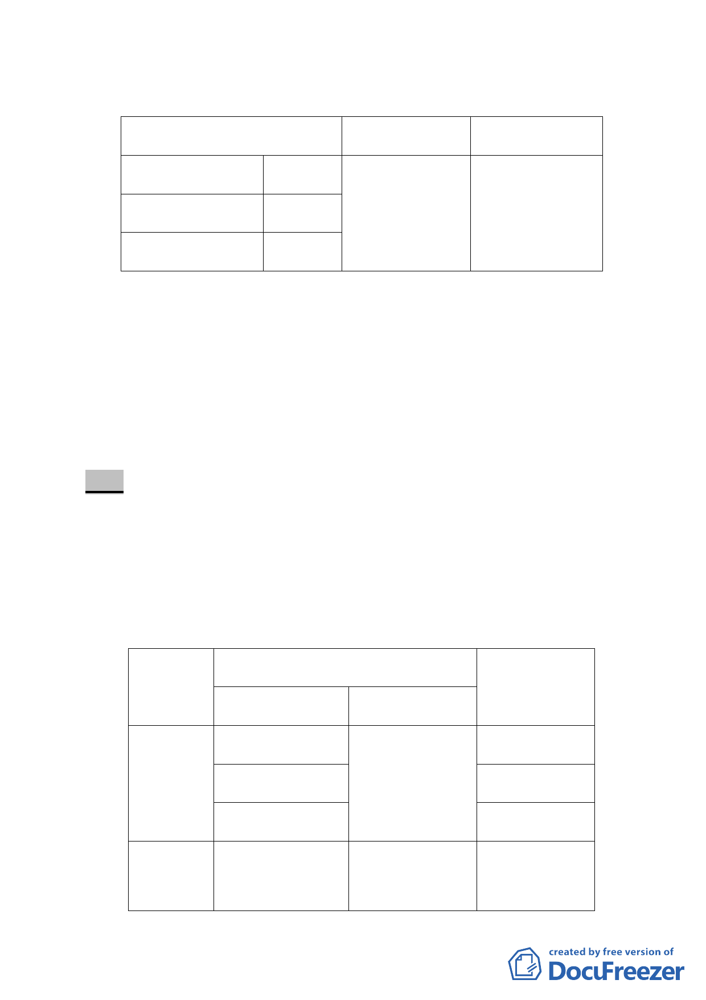

三、計畫內容：
原計畫內容
變更內容
變更面積（m²）
第三種住宅區 126 m² 抽水站用地
526
道路用地
171 m²
河道用地
229 m²
四、本案係市府 100 年 2 月 21 日以府都規字第 09940115703 號函
送到會，自 100 年 2 月 22 日起公開展覽 30 日。
五、申請單位：臺北市政府（工務局水利工程處）。
六、辦理機關：臺北市政府。
七、法令依據：都市計畫法第 27 條第 1 項第 4 款（為配合中央、
直轄市或縣（市）興建之重大設施時）。
八、公民或團體陳情意見：無。
決議：
有關研究院路一段 151 巷之道路用地範圍既經市府查明並未
跨越四分溪河道，本案除以下幾點應再作修正外，其餘依市府公
展之計畫書、圖通過。
一、 計畫書第 3 頁變更計畫內容之表格，依下列以四分溪以北、
四分溪以南兩處基地分別表列之表格通過。
位置
變更內容
面積
原計畫
新計畫 （平方公尺）
四分溪 第三種住宅區 抽水站用地
以北 道路用地
126
171
河道用地
17
四分溪 河道用地
以南
抽水站用地
212
-2-